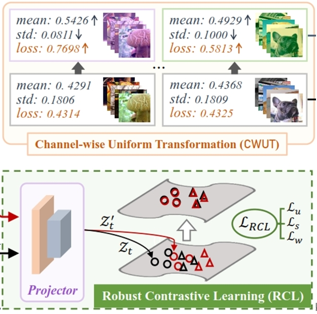
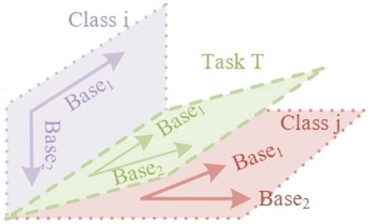
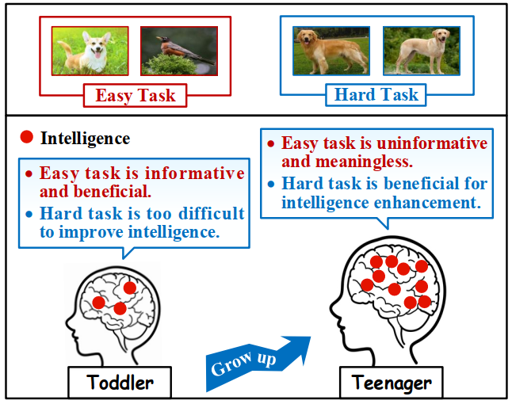

|
Ji Zhang I'm currently a fourth-year Ph.D student at University of Electronic Science and Technology of China (UESTC), where I'm very fortunate to be supervised by Prof. Jingkuan Song and Prof. Lianli Gao. My research mainly focuses on Few-Shot Learning (FSL), Out-of-distribution (OOD) Detection and Continue Learning. I'm now especially interested in developing advanced algorithms that enable rapid adaptation of large pre-trained vision and language models, e.g. via Prompt Tuning. If you are also interested in related topics, please do not hesitate to reach out. |
{kind=link}
News
[10/2023] One paper about OOD Detection is accepted by IEEE T-IP. |
|
|
DePT: Decoupled Prompt Tuning
Ji Zhang*, Shihan Wu*, Lianli Gao, Hengtao Shen, Jingkuan Song arXiv, 2023 [Paper][Code] Overcoming the base-new tradeofff (BNT) problem for existing prompt tuning methods. |
|
|
From Global to Local: Multi-scale Out-of-distribution Detection
Ji Zhang, Lianli Gao, Bingguang Hao, Hao Huang, Jingkuan Song, Hengtao Shen IEEE Transactions on Image Procesing (T-IP), 2023 [Paper][Code] Leveraging both global visual information and local region details of images to maximally benefit OOD detection. |
|
|
DETA: Denoised Task Adaptation for Few-shot Learning
Ji Zhang, Lianli Gao, Xu Luo, Hengtao Shen, Jingkuan Song IEEE International Conference on Computer Vision (ICCV), 2023 [Paper][Code] Tacking both the X-noise (i.e., image noise) and the Y-noise (i.e., label noise) in a unified framework for test-time few-shot tasks. |

|
A Closer Look at Few-shot Classification Again
Xu Luo*, Hao Wu*, Ji Zhang, Lianli Gao, Jing Xu, Jingkuan Song International Conference on Machine Learning (ICML), 2023 [Paper][Code] Empirically proving the disentanglement of training and test-time adaptation algorithms in few-shot classification. |
|

|
Free-lunch for Cross-domain Few-shot learning: Style-aware Episodic Training with Robust Contrastive Learning
Ji Zhang, Jingkuan Song, Lianli Gao, Hengtao Shen ACM International Conference on Multimedia (ACM MM), 2022 [Paper][Code] Addressing the side-effect of style-shift between tasks from source and target domains. |
|

|
Class Gradient Projection for Continual Learning
Cheng Chen, Ji Zhang, Jingkuan Song, Lianli Gao ACM International Conference on Multimedia (ACM MM), 2022 [Paper][Code] Projecting the gradient update orthogonal to the gradient subspace of individual classes to mitigate the catastrophic forgetting issue in continual learning. |
|
|
Progressive Meta-learning with Curriculum
Ji Zhang, Jingkuan Song, Lianli Gao, Ye Liu, Heng Tao Shen IEEE Transactions on Circuits and Systems for Video Technology (T-CSVT), 2022 [Paper][Code] An extended version the ACM MM'21 paper, where the curriculum is effectively integrated as a regularization term into the objective so that the meta-learner can measure the hardness of tasks adaptively. |
|

|
Curriculum-based Meta-learning
Ji Zhang, Jingkuan Song, Yazhou Yao, Lianli Gao ACM International Conference on Multimedia (ACM MM), 2021 [Paper][Code] Progressively improving the meta-learner by performing episodic training on simulating tasks from easy to hard, i.e., in a curriculum learning manner. |
Academic Service
|
This well-designed template is borrowed from Jonbarron. |